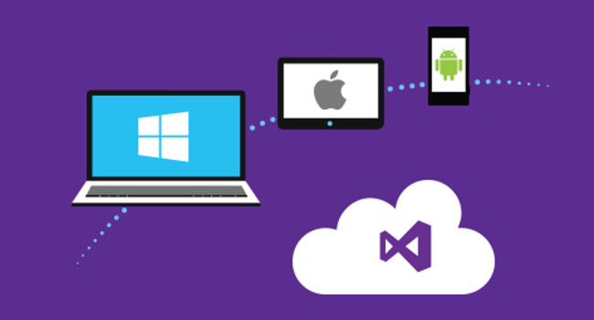

Note: During Windows 10 App Dev you can use all the debugging tools. You can set break points, step line-by-line through code, evaluate property values, variables, etc. as the application is running.You also have so many different emulators available in debug mode. Not only do they emulate the different screen sizes and resolutions, but they also emulate different memory constraints for the different phone hardware available today. So we can test our application in a low memory environment or test our application in a high memory environment, as well as screen resolutions and sizes. So you can control your App interface upon every interface by making your XAML compatible for every screen. You can see that there’s a Grid used in the page template for MainPage.xaml. These are called Layout Controls, they're very important to the adaptive story of Universal Windows Platform apps. Layout controls allow a single code base to be utilized across many different devices of device form factors. The Universal Windows Platform API provides this rich collection of visual controls that work across all Windows devices. They allow input via mouse in some cases, or via finger in other cases. But that same API also provides us with thousands of methods across hundreds of classes of namespaces that allow you to do really cool stuff with your application. For example, if you need to access the Internet to go retrieve some sort of resource, or if you want to work with a file on the file system, whether it be on a phone, or a tablet, or a desktop, or even the Xbox. Or if you want to play a media file, like a song or a video, there are methods in the UWP API, that make all of those things possible and a lot more. These the layout and visual qualities of controls may need to change based on the screen size of the device they’re running on. Creating adaptive triggers allows me to modify the layout and the scale of items in our application based on the size of the screen. Again, this will be another topic that I'll be demonstrating often throughout this series because it too, is one of the most important new features available in the Universal Windows Platform. XAML allows us to layout controls on our app’s forms. XAML is not specific to the Universal Windows Platform; it’s been around for about a decade now. But building a Universal Windows Platform app really all starts with a fundamental understanding of the XAML language and how to mold it and shape it to do what we want it to do for our application. So, learning XAML is number one and we will start that in the very next lesson.

JumpStart with XAML in UWP
If you want to leverage your existing knowledge of creating user interfaces and doing so in Visual Studio, and apply that towards creating Universal Windows Platform apps. Did you notice how similar it was to creating WPF and ASP.Net Web Forms? That was no accident. It’s a very similar experience and a very similar workflow. And as a result, it’s just as fun, and it’s just as easy, and while there is a lot to learn, there’s certainly nothing to be intimidated about.
There are several options for designing the user interface of your application.
First, by dragging and dropping controls from the Toolbox onto the design surface, resizing those controls and positioning them on the design surface.
Second, by the Properties window. That can be used to modify the various attributes of the controls that we see on the designer surface. However, I think you're going to find that, just like HTML, a visual designer won't give you the level of control that you're really going to want over the various properties and how they relate to each other.
Third, and the awesome way is to be done by XAML editor. Here you can get the full command of your application interface and build the most precise interface.
So, there is really no way around learning the actual XAML syntax itself.
Furthermore, just like ASP.NET Web Forms and WPF applications, every page has a code behind file that's associated with it where we can write event handler code in C#. We see that same relationship between the MainPage.xaml and the MainPage.xaml.cs in Windows 10 apps.
In fact, in the MainPage.xaml.cs, you can see that we're in the namespace "JumpStartWithXAML" and we're creating a class called MainPage, notice that it says "partial class".
Using the keyword partial allows developers to create multiple class definitions and all have them be partial definitions of a single class, stored in different files. But as long as that file has the same class name, and is in the same namespace, and it has the keyword "partial", we can create many different files to represent a single class.
Notice that this MainPage derives from an object called Page. If we were to hover over, you can see that this is a class called Windows.UI.XAML.Controls.Page.
If you go to the MainPage.xaml, and look here at the very top, notice here that we're working with a Page object and notice that the class name is also HelloWorld, namespace, MainPage, class.
The MainPage.xaml and MainPage.xaml.cs are two different files that represent the same class.
One of these files represents the class from a visual perspective (i.e. MainPage.xaml).
And The other represents it from a behavioral aspect (i.e. MainPage.xaml.cs).
You might also like


Comments are disabled on the static version of this site. To discuss this post, connect on LinkedIn.